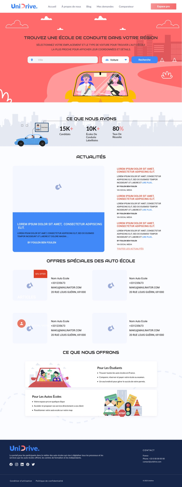

Project
UnDrive
Finding the right driving school, in a few clicks
A platform for searching driving schools by location and filtering on the details that actually matter to a learner. Designed as a freelancer with Inspire, a development agency.

Intro
As a freelancer at Inspire, a development agency, we worked on a project for a driving school. The platform lets users search for driving schools in any location and filter on the details that decide whether a school suits them.
The solution
The result was an intuitive platform where location-based search and detailed filtering combine into a personalised result rather than a generic directory listing. Choosing a driving school that fits your specific requirements comes down to a few clicks, which is a meaningful improvement on ringing round or taking a recommendation on trust.
The outcome
The homepage and its search entry point, an individual driving school page, and the filtered search listing.